pyRevit Revit API
Набор плагинов для Autodesk Revit 2023+.
Автоматизация работы с моделями для всех разделов проектной документации.
Функционал плагинов может быть реализован через серверную часть.
BIM
Плагин 1.1. Создать рабочие наборы
Создает рабочие наборы для выбранного раздела.
Расположение:
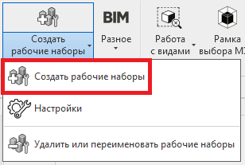
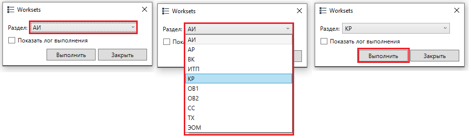
Если вы запустите раньше, то программа выдаст соответствующее предупреждение сообщение.
После запуска плагина появляется окно Worksets, в котором можно выбрать нужный раздел.
Файл настроек хранится в папке %appdata%/MEI_pyrevit.
Плагин 1.2. Настройки для рабочих наборов
Настройка списка новых и переименования стандартных рабочих наборов.
Расположение:
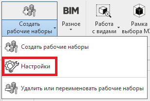
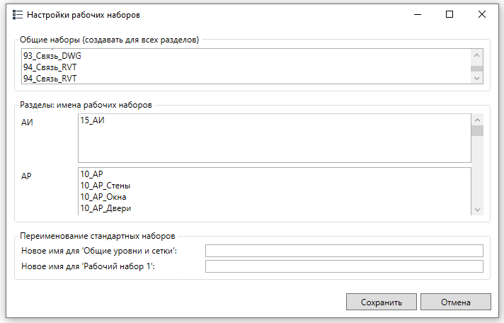
Плагин 1.3. Удалить или переименовать рабочие наборы
Позволяет удалить или переименовать рабочие наборы.
Расположение:
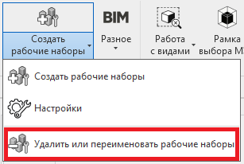
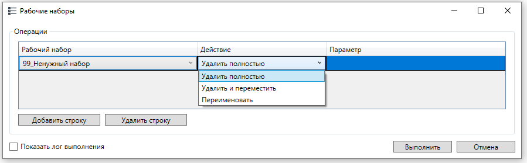
• Удалить полностью.
• Удалить и переместить.
• Переименовать.
❗ При выборе действия «Удалить и переместить» станет активен выбор в столбце «Параметр», в котором из выпадающего списка можно выбрать тот рабочий набор, в который будут скопировано содержимое рабочего набора, который будет удален.
Плагин 1.4. Проверка модели
Предварительная проверка модели по требованиям МЭИ.
Расположение:
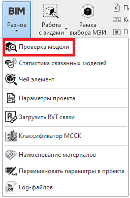
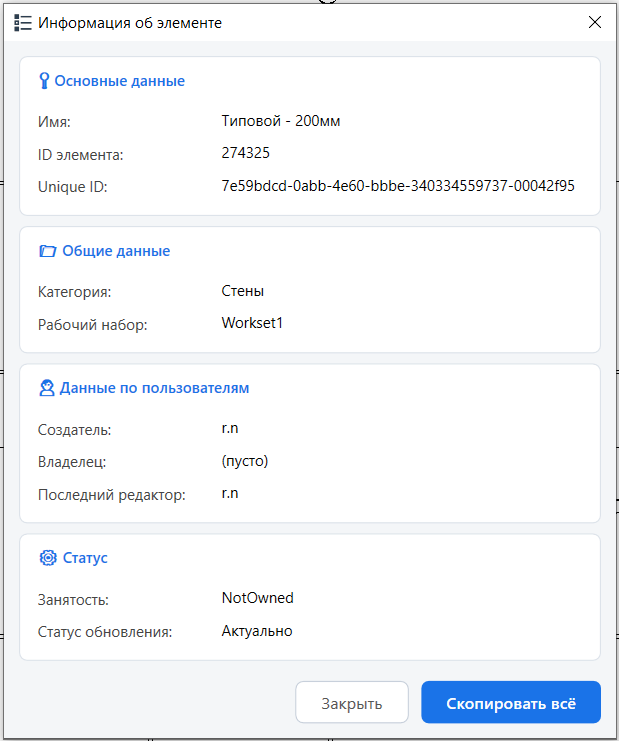
1. Общая информация.
2. Виды для координации.
3. Элементы модели по категориям (весь проект).
4. Проверка параметров элементов модели.
5. Статистика модели.
6. Предупреждения модели.
7. Revit-связи.
8. Импортированные CAD.
9. Координаты базовых точек.
10. Рабочие наборы (Всего: ).
11. Фазы проекта.
12. Варианты (Design Options).
Плагин 1.5. Статистика связанных моделей
Показывает данные по количеству элементов, видов, спецификаций, листов и ошибок в связанных моделях. Результат сохраняется в файл csv. Используется для формирования отчетности работы с моделью.
Расположение:
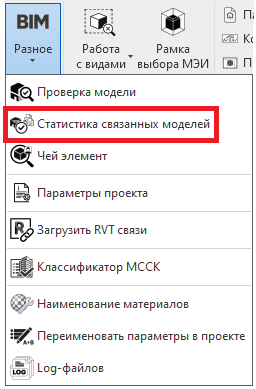
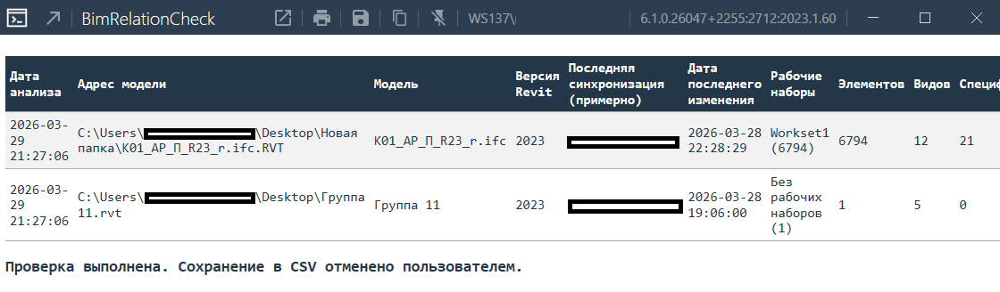
При запуске плагин спрашивает сохранить файл отчета или нет. Сохранять может только сотрудник БИМ отдела!
Если плагин запустился не планово, то не обходимо внести изменения руками в файл отчетности доступный БИМ отделу.
Плагин 1.6. Чей элемент
Позволяет посмотреть данные по элементу.
Расположение:
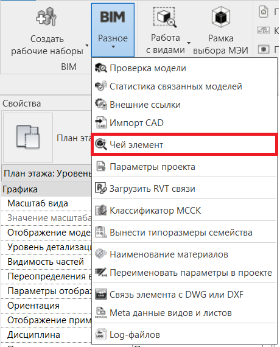
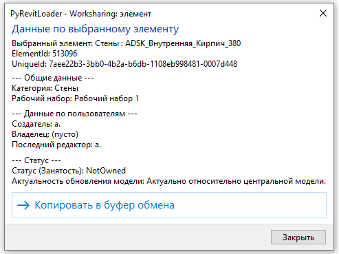
Плагин 1.7. Параметры проекта
Позволяет заполнять параметры проекта.
Расположение:
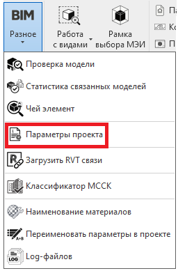
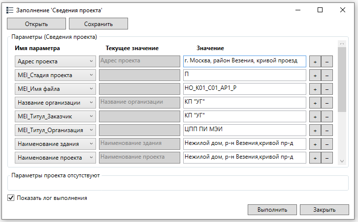
Можно выбрать Имя параметра и присвоить ему соответствующие значения.
В поле Текущее значение указывается значение уже имеющееся в проекте. Если Вам необходимо перенести данное значение в соседнее поле Значение – просто нажмите на данное поле с текстом.
❗ С помощью кнопки «Сохранить» можно создать файл .json и применять его в дальнейшем без повторного заполнения параметров.
Плагин 1.8. Загрузить RVT связи
Позволяет загрузить RVT связи из списка.
Расположение:
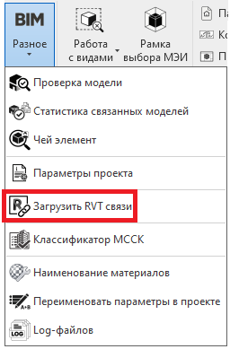
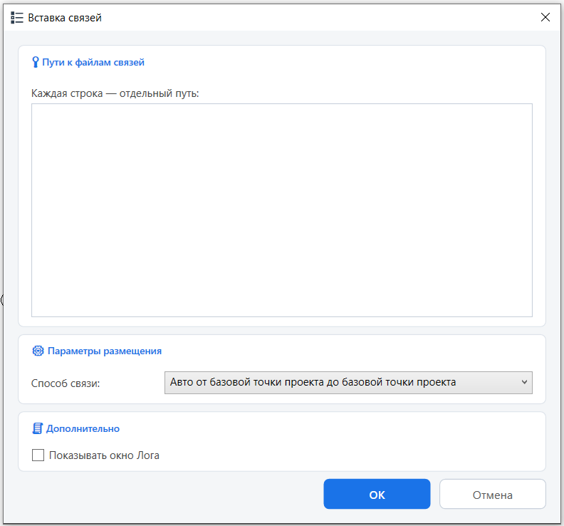
❗ В выпадающем списке выберите как вы хотите осуществить связь.
Плагин 1.9. Классификатор МССК
Позволяет заполнить параметры данными из Классификатора МССК.
Расположение:
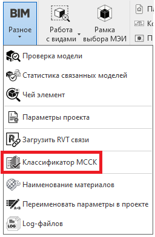
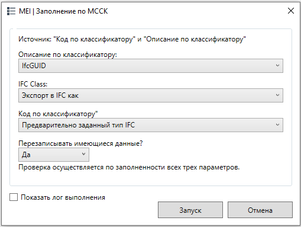
Для записи соответствующих данных названию поля выберите соответствующие параметры.
Плагин 1.10. Наименование материалов
Позволяет скопировать имя материала в параметр материала. Данный плагин необходим для автоматического заполнения параметров материала на основании на именования самого материала.
Расположение:
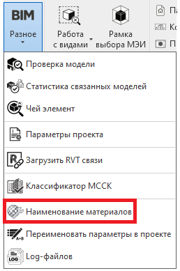
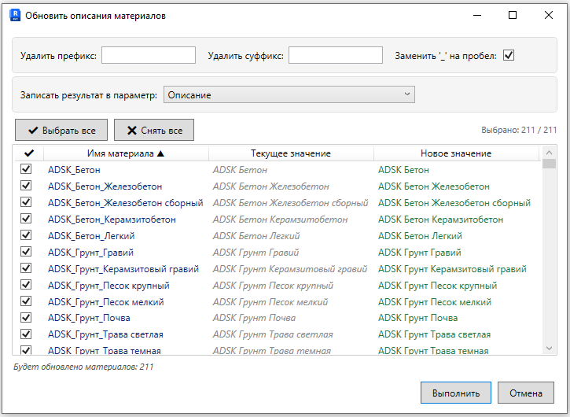
Плагин 1.11. Переименовать параметры в проекте
Позволяет переименовать общие параметры, размещенные в проекте, согласно наименованию, в ФОПе.
Расположение:
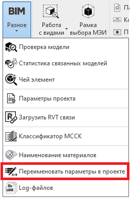
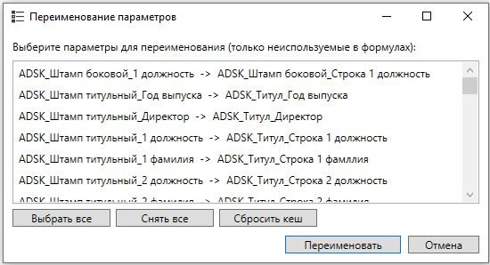
После запуска плагина происходит анализ проекта и всех семейств проекта. Анализ определяет какие параметры не соответствуют наименованию в ФОП но имеют такой же GUID, а так же которые не используются в формулах и не содержат их.
Плагин 1.12. Связь элемента с DWG или DFX
Позволяет заполнять параметры у элементов указав связь с листами DWG/DFX файлов.
Расположение:
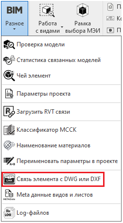
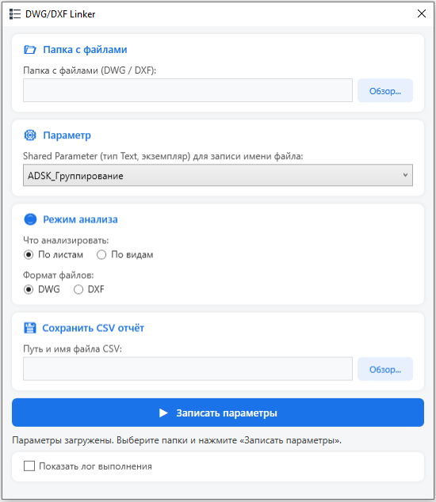
После выполнения плагина выбранный параметр у элементов будет содержать имя DWG/DXF файла, с которым связан данный элемент.
Плагин 1.13. Meta данные видов и листов
Позволяет выгружать meta данные видов и листов проекта, которые позволяют правильно вставить данные DWG/DFX файлов в IFC.
Расположение:
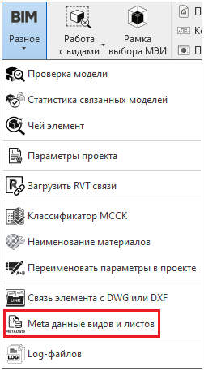
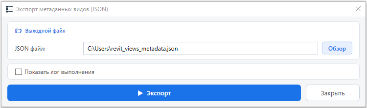
Файл используется для корректной привязки и позиционирования чертежей DWG и DXF при формировании IFC при использовании специализированной программы.
Плагин 1.14. Log-файл
Позволяет посмотреть Log файл проекта.
Расположение:
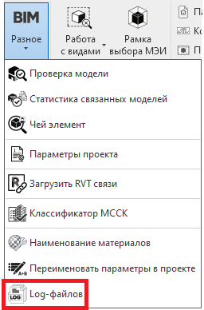
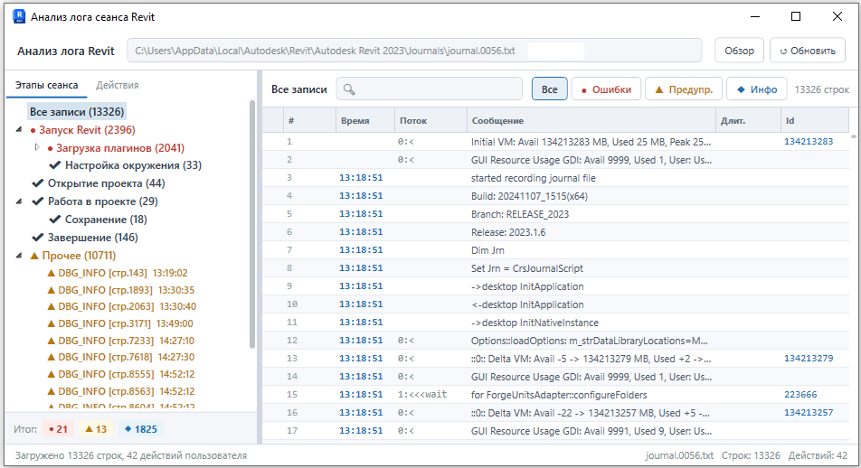
Плагин 1.15. Внешние ссылки
Показывает все внешние ссылки текущего проекта.
Расположение:
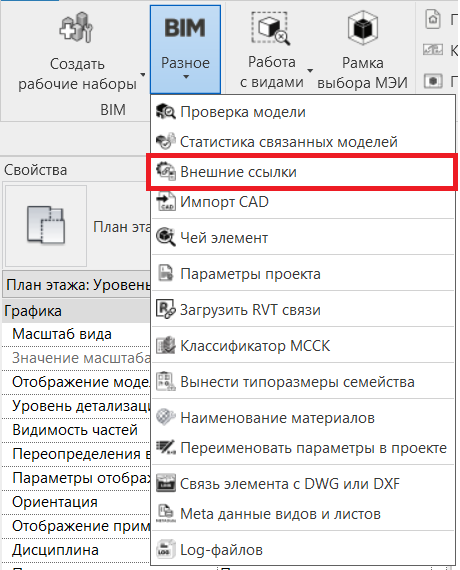
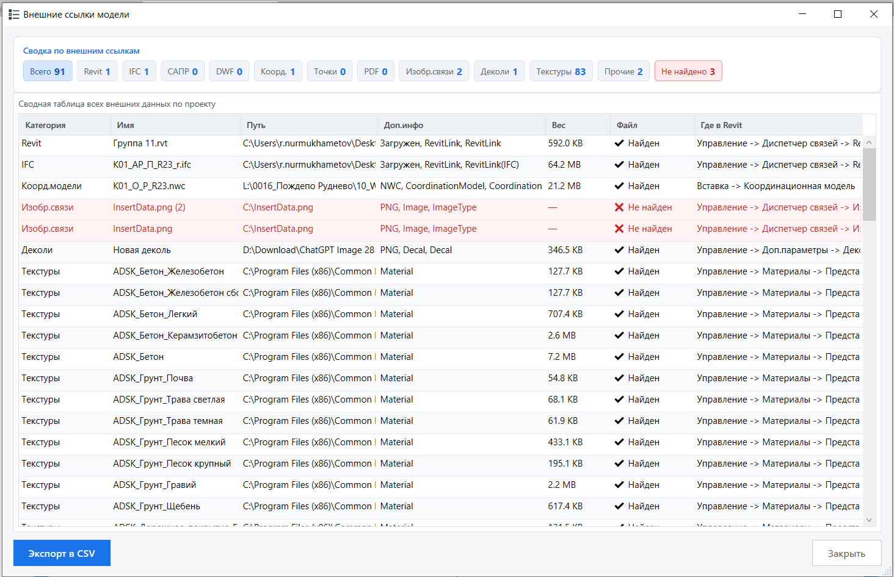
Плагин 1.16. Импорт CAD
Показывает импортированные CAD файлы.
Расположение:
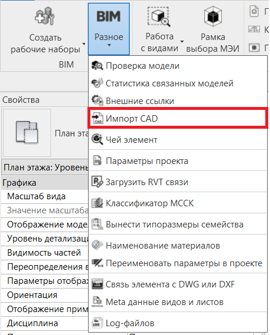
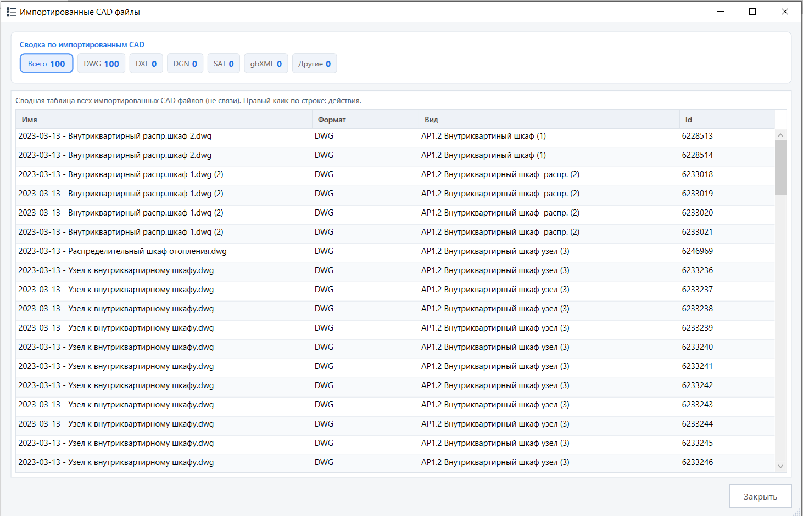
Плагин 1.17. Пересохранить файлы
Позволяет отсоединить и пересохранить все файлы в выбранной папке.
Расположение:
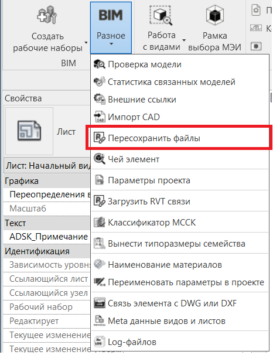
Плагин 1.18. Копировать уровни и оси
Позволяет выбрать файл модели, который будет подключен как связь и из которого скопируются оси и уровни.
Расположение:
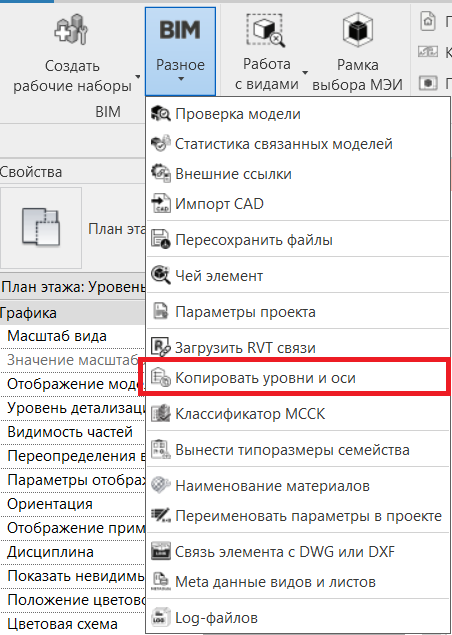
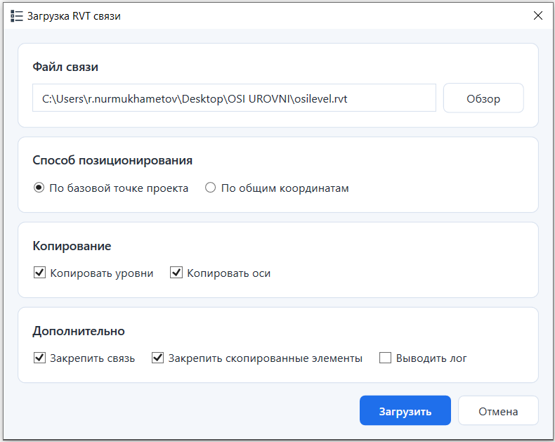
❗ Мониторинг скопированных элементов, в связи с ограничением API Revit выполняется в ручном режиме.
Вид
Плагин 2.1. Изолировать элементы уровня
Позволяет изолировать элементы с привязкой к уровню.
Расположение:
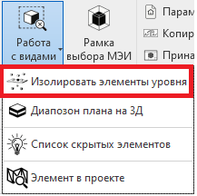
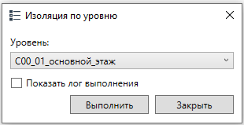
Для отображения скрытых объектов нажмите «Восстановить исходный вид» в нижней части экрана.
Плагин 2.2. Диапазон плана на 3Д
Показывает настройки секущего вида на 3Д.
Расположение:
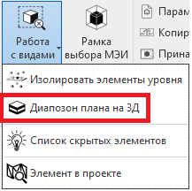
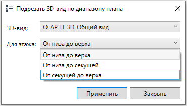
• От низа до верха - останутся линии среза пройдут от уровня выбранного Плана этажа до верха, т.е до уровня находящегося над ним, и вы увидите лишь то, что находится между ними.
• От низа до секущей - линии среза пройдут от уровня выбранного Плана этажа до значения уровня секущей плоскости. Вы увидите лишь то, что находится между ними.
• От секущей до верха - линии среза пройдут от значения уровня секущей плоскости до значения высоты этажа, или же значения уровня, расположенного выше. Вы увидите лишь то, что находится между ними.
Плагин 2.3. Список скрытых элементов
Позволяет отобразить список элементов, не видимых на текущем виде.
Расположение:
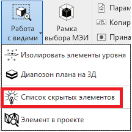
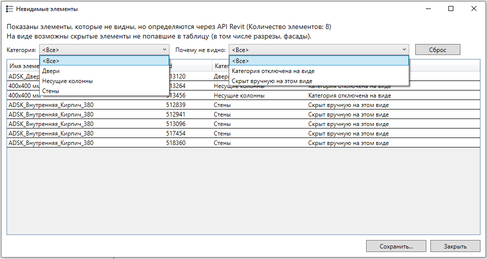
В плагине не гарантируется 100% отображение элементов не видных на виде, но в значительной части поможет быстрее определится с причиной не видимости объекта.
❗Работает в соответствии с настройками Секущего диапазона
Плагин 2.4. Элемент в проекте
Позволяет показать виды, листы и спецификации, на которых виден выделенный элемент, с возможностью перехода на них.
Расположение:
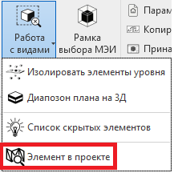
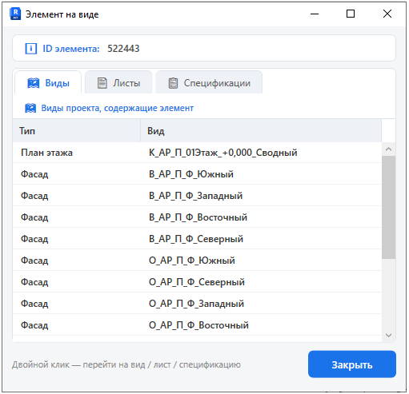
Плагин 2.5. Рамка выбора МЭИ
Плагин разбирает и изолирует элементы. Работает на видах, включая спецификации, и со связанными файлами.
Расположение:
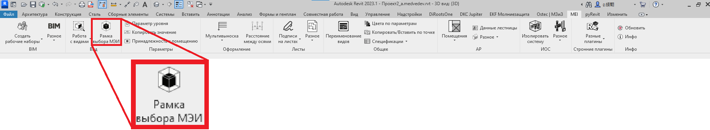
❗Однако, в связанных файлах элемент обрезается, но изолируется весь связанный файл, а не выделенный элемент из-за особенности API Revit.
Плагин 2.6. Найти вид в диспетчере
Находит и подсвечивает активный вид (вкладку, спецификацию или лист) в Диспетчере проекта.
Расположение:
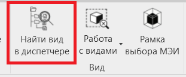
❗Если диспетчер проекта был закрыт, то он автоматически откроется.
Параметры
Плагин 3.1. Параметр уровня
Плагин позволяет заполнять параметр принадлежности к уровню.
Расположение:
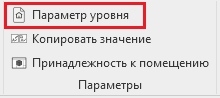
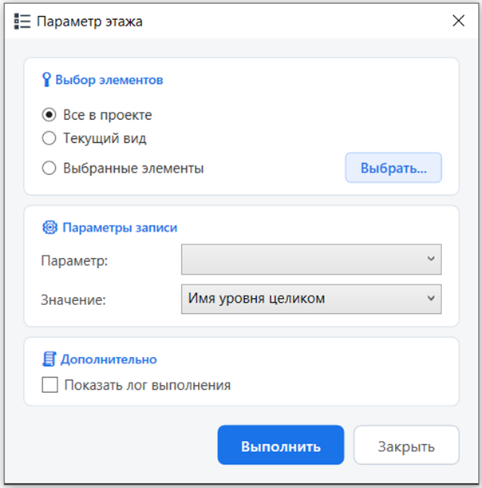
• Имя уровня целиком — полное имя (например, «Этаж_01»).
• Номер этажа (цифра) — только число (например, «01»).
• Высотная отметка уровня (мм) — высота в миллиметрах (например, «3000»).
Плагин 3.2. Копирование значения
Плагин позволяет заполнять копировать значения между параметрами.
Расположение:
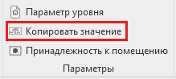
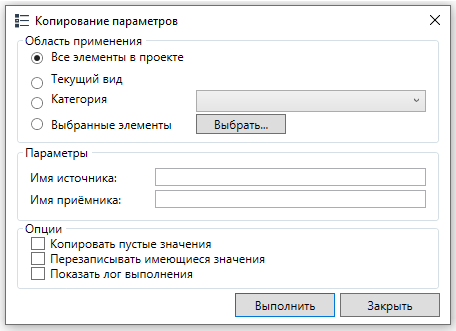
Плагин 3.3. Принадлежность к помещению
Плагин позволяет заполнять параметр принадлежности к помещению.
Расположение:
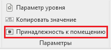
❗Если элементы инженерных систем находятся в отдельной модели, выберите связанную архитектурную модель как источник помещений.
Оформление
Плагин 4.1. Мультивыноска
Плагин позволяет разместить мультивыноску с наименованиями материалов.
Расположение:
• 002_MEI_Выноска для многослойной конструкции(тип1).rfa
• 002_MEI_Выноска для многослойной конструкции(тип2).rfa.
В название материала попадает текст указанный в параметре Описание материала. Если в данном параметре текст отсутствует, то будет указано Имя материала.
❗Плагин автоматически добавляет для работы имя id элементов, к которому привязана мультивыноска ParentElementID и удалять данный параметр запрещается.
Плагин 4.2. Обновить
Если объекты, на которые вы поставили мультивыноску поменяли структуру элемента, то с помощью плагина вы можете обновить данные мультивыноски и сделать её актуальной.
Расположение:
Плагин 4.3. Параметр уровня
Плагин позволяет разбить один общий размер между крайними осями, на размеры между каждой осью.
Расположение:
❗ Размеры уже должны быть в проекте.
❗ Размер, который вы хотите разбить осями должен пересекать эти оси.
Плагин 4.4. REL/ABS высотная отметка
Позволяет добавить к Относительной высотной отметке Абсолютную высотную отметку, которая будет располагаться ниже.
Расположение:
❗ Работает только с заранее настроенным проектом с загруженными семействами.
Листы
Плагин 5.1. Подпись на листах
Плагин позволяет установить или удалить подписи на листах в рамках.
Расположение:
Установка и удаление применяется ко всем листам!
❗ Данная настройка подписи работает ТОЛЬКО для Основной надписи.
При заполнении данных рамки ФИО лица может быть вписано в двух вариантах: Фамилия или Фамилия и инициалы.
❗ С рамками ADSK плагин не работает - ломает проект и рамки.
Плагин 5.2. Настройки подписи на листах
Настройка подписей.
Расположение:
Плагин 5.3. Кол-во листов раздела
Плагин позволяет заполнить параметр количества листов для основной надписи с учетом группировки.
Расположение:
Плагин 5.4. Набор листов
Формирует набор листов для группового экспорта оформленных листов.
Плагин предназначен для автоматического создания наборов (групп) листов в Revit, которые можно использовать при: Печати в PDF; Экспорте в DWG и другие форматы CAD.
Расположение:
❗ Листы должны быть выделены перед запуском команды!
Общее
Плагин 6.1. Переименование видов
Плагин позволяет переименовывать Виды, Спецификации, Листы в Диспетчере проекта.
Расположение:
Плагин 6.2. Цвета по параметрам
Позволяет раскрасить элементы модели по параметрам.
Расположение:
Созданные плагином фильтры являются временными служебными фильтрами. При очистке визуализации через кнопку «Очистить всё» плагин:автоматически удаляет созданные фильтры и возвращает отображение вида к исходному состоянию.
❗Если пользователь хочет оставить данные фильтры фильтры после анализа, необходимо переименовать фильтры, в соответствии с ТИМ стандартом.
Плагин 6.3. Копировать/Вставить по точке
Позволяет скопировать элементы указав точку копирования и далее вставить элементы так же указав точку вставки.
Расположение:
❗После вставки элементов буфер скопированных элементов очищается.
Плагин 6.4. Создать спецификацию
Позволяет создать Спецификацию на основе данных из файла Excel.
Расположение:
Плагин 6.5. Импорт ключевой спецификации
Позволяет импортировать данные из файла в ключевую спецификацию.
Расположение:
• Первая строка файла - заголовок.
• Первый столбец - имя ключа.
• Остальные столбцы - по порядку колонок ключевой спецификации.
АР
Плагин 7.1. Расположить марку помещения
Позволяет создать или переместить марку помещения по центру помещения или в правом нижнем углу помещения.
Расположение:
Расположение марки доступно в следующих вариантах:
• Центр – марка будет выровнена по центру помещения.
• Угол (правый нижний) – марка будет размещена в правом нижнем углу помещения.
Плагин 7.2. Одинаковые помещения
Записывает номера всех помещений с одинаковыми параметрами в выбранный параметр Помещения.
Расположение:
Плагин 7.3. Площадь отделки стен
Позволяет вычислить и записать в параметр Помещения площадь отделки стен.
Расположение:
Плагин 7.4. Высота помещения
Определяет реальную высоту помещения и записывает значение в выбранный параметр.
Расположение:
Плагин 7.5. Данные лестницы
Данный плагин позволяет вычислить следующие данные лестницы:
Площадь подступёнка,Площадь проступи,Площадь низа марша,Площадь площадки,Объем лестницы.
Расположение:
Плагин 7.6. Создание цветовую схему
Позволяет создать цветовую схему для помещений на основе данных из файла CSV или XLSX.
Расположение:
Файл в зависимости от типа данных должен содержать:
• для типа Значение: Значение;R;G;B;Заливка
• для типа Диапазон: Не менее(число);Заголовок;R;G;B;Заливка
Образец заливки может быть пустым. Первая строка считается Заголовком и пропускается при импорте.
Плагин 7.7. Отсоединить зависимость элемента
Позволяет отсоединить зависимость элементов от других элементов.
Расположение:
Плагин 7.8. Структура элемента
Позволяет записать наименование слоев в параметр элемента.
Расположение:
Плагин 7.9. Создание уровня
Позволяет создать или редактировать уровни в проекте.
Расположение:
Плагин 7.10. Сетка осей
Позволяет создать ортогональную сетку осей.
Расположение:
Плагин 7.11. Эскизы Дверей/Окон/Витражей
Позволяет создать и вывести эскизы Дверей/Окон/Витражей.
Расположение:
Поддерживаются следующие элементы:
• Двери.
• Окна.
• Витражи.
Для витражей могут быть использованы три типа построения по криволинейности (параметр «Криволинейные посегментно» - данный параметр не затрагивает прямолинейные витражи):
• Нет – ставится один разрез по центру витража.
• Да (сегмент) – разрез ставится на каждый сегмент витража и выносится на лист как отдельностоящий разрез.
• Да (развертка) – создается чертежный вид, на котором автоматически воссоздается развернутый витраж в плоскости.
Плагин формирует специальные планы уровней на которых отображаются полученные разрезы в в разделе Диспетчера проекта.
Плагин создает фильтры, которые позволяют исключить видимость только данных разрезов на других видах!
При пересоздании существующие разрезы удаляются автоматически и создаются новые.
❗ Марка на эскизах – это текст, то есть при изменение он автоматически не изменится.
Плагин 7.12. Разрезы по отверстия
Позволяет создать разрезы по стенам где находятся отверстия или задания.
Расположение:
Разрезы формируются в разделе Диспетчера проекта.
Плагин так же создает фильтр который позволяют исключить видимость только данных разрезов на других видах!
Плагин 7.13. Эскизы пирога пола
Позволяет создать Легенду с пирогами выбранных полов.
Расположение:
❗ Для работы необходимо, чтобы в проекте была Легенда с именем: "В_АР_Для плагина MEI" с наличием размещенного вида. Так же нужен любой 3Д Вид в проекте!
Плагин 7.14. Импорт LandXML
Создание топоповерхности Revit из файла LandXML.
Расположение:
• Должны быть узлы Pnts и Faces.
• В Pnts каждая точка должна быть P id="..." с уникальным id.
• Координаты точки: минимум 3 числа в порядке Y X Z (север, восток, высота).
• В Faces каждая грань F должна ссылаться на существующие id точек.
Грани должны быть треугольными (3 индекса на грань).
• В файле должны быть валидные числовые значения координат.
• Единицы в файле должны соответствовать выбранному коэффициенту в плагине.
❗ Если программа (Сivil/NanoCad) экспортирует только контуры/точки без Faces, плагин не сработает.
Плагин 7.15. Экспорт LandXML
Перевод топоповерхности(TopographySurface) Revit в файл LandXML.
Расположение:
Плагин 7.16. Зона СПП в ГНС
Позволяет создать Зону СПП в ГНС в соответствии с требованиями АГР.
Расположение:
Режим «По пользовательским помещениям предполагает что вокруг корпуса пользовать сам создаст Границу помещения (инструмент «Разделитель помещений») и поставит в него помещение, а плагин уже позволит выбрать данное помещение и построить зону.
Плагин 7.17. 3Д Объем здания
Позволяет выполнить автоматическое построение объемную модель по очертанию здания для надземной и подземной части.
Расположение:
Обязательное условие для работы плагина заполненный параметр у стен Функция - Наружный слой.
❗ Данный плагин может не всегда точно построить модель со сложной формой, поэтому обязательно проверяйте результат работы плагина. Вы всегда можете отредактировать получившееся семейство, через редактор семейств.
ИОС
Плагин 8.1. Изолировать систему
Плагин позволяет изолировать элементы, принадлежащие определенной системе на отдельном создаваемом 3д виде. При этом возможно так же создать фильтры для элементов.
Расположение:
Если была включена опция «Сформировать фильтр» который будет выбирать только данный элемент, в списке фильтров видов создастся новый фильтр, настроенный по параметру имени системы; его можно применять и к другим видам проекта для быстрого включения/отключения нужной системы.
Плагин 8.2. Проходка/гильза в отверстие
Позволяет проставить проходку или гильзу в выбранное отверстие. Если квадратное - то проходка, если круглое - то гильза.
Расположение:
❗ Плагин работает только с отверстиями в связанной модели.
Плагин 8.3. Сравнить Room и Space
Позволяет сравнивать данные Помещений (Номер, Имя и Площадь) из связанного файла с Пространствами в текущем файле.
Расположение:
Если в настройке указан допуск 2 м², то разница 1.8 м² не будет считаться ошибкой.
Плагин 8.4. Замена IFC элемента
Позволяет заменить точечный IFC элемент на семейство RVT.
Расположение:
Сторонние плагины
Интеграция сторонних плагинов
Этот модуль представляет из себя наборы сторонних плагинов: ModPlus, BimStep, Citrus, DiRoots.
Расположение:
Инфо
Кнопка Обновить
Позволяет обновлять плагины до последней версии.
Расположение:
❗ После обновления плагина рекомендуется перезапустите Revit для более точного отображения элементов в меню плагина.
Кнопка Информации
Позволяет увидеть информацию о плагине и дополнительную полезную информацию.
Расположение:
Все ссылки ведут на сетевые ресурсы компании.